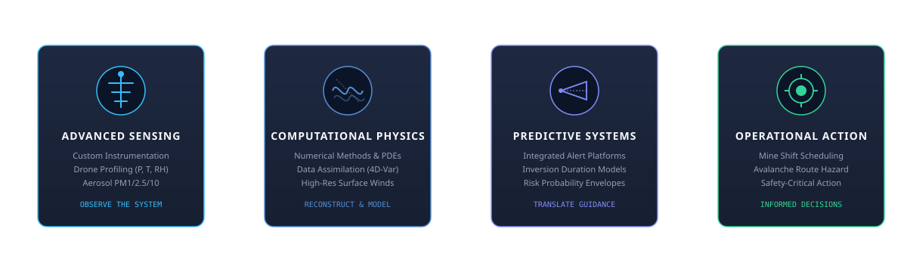

Turning Physical Understanding Into Operational Technology
Measure. Understand. Predict.
VAER Systems develops integrated sensing, computational mathematics, and physics-informed predictive technologies to solve complex Earth-system problems across extreme environments.
The Complete Physical Observation-to-Decision Chain
VAER Systems is founded on scientific substance rather than exaggerated claims or generic AI branding. Our distinguishing capability is integrating the entire physical continuum: observing the real world, reconstructing its state, modeling its dynamics, and delivering interpretable predictions for safety-critical decisions.

Advanced Sensing • High-Fidelity Environmental Telemetry
Reliable measurements in demanding, sub-zero field conditions. We build custom multi-depth snowpack thermal sensor strings, rugged mountain mesh radios, and drone-mounted atmospheric profiling payloads measuring pressure, temperature, relative humidity, and aerosol distributions (PM1, PM2.5, PM10).
Computational Physics • Numerical Methods & Data Assimilation
Translating physical conservation laws into digital algorithms. Integrating field measurements with governing Navier-Stokes boundary layers, energy balance equations, and real-time variational data assimilation (4D-Var) to reconstruct unobserved spatial states across complex topography.
Predictive Systems • Rigorous Prognostic Functions
Translating model states into actionable risk assessments and early warnings. Our prognostic engines compute the probability and duration of surface temperature inversions, snowpack instability evolution, and aerosol transport with transparent uncertainty bounds.
Operational Decisions • Human-in-the-Loop Confidence
Empowering mine superintendents, avalanche forecasters, and alpine infrastructure managers with clear guidance. We make operating limits and uncertainties explicit, reinforcing the indispensable role of human judgment in safety-critical environments.
Advanced Sensing Technologies
Measuring environmental variables reliably in extreme, remote, and complex field conditions where commercial off-the-shelf hardware fails.
- Custom environmental instrumentation & sensor design
- Embedded low-power electronics & sub-zero telemetry
- Distributed snowpack temperature arrays in steep terrain
- Drone-based thermodynamic soundings (P, T, RH)
- Aerosol optical particle instrumentation (PM1, PM2.5, PM10)
- Active/passive laser & microwave remote sensing
Computational Physics
Bridging sparse physical measurements and digital systems through quantitative numerical representations of Earth-system dynamics.
- Advanced numerical methods & computational mathematics
- Physics-constrained & hybrid physical/statistical models
- High-resolution surface-wind fields over mountainous terrain
- Real-time data processing & Kalman/variational assimilation
- Coupled atmosphere, snow, ice, and land-surface processes
- Domain-specific scientific software workflows
Predictive Systems
Transforming observations and computational outputs into timely forecasts, risk envelopes, and actionable operational guidance.
- Integrated environmental monitoring & warning platforms
- Physically informed avalanche hazard decision support
- Prognostic duration models for winter mining inversions
- Operational dashboards with calibrated uncertainty
- Rigorous empirical validation against independent field data
- Interpretable outputs for frontline personnel
Applied Deep-Technology Programs
VAER Systems focuses on targeted operational challenges where physical modeling and custom instrumentation provide order-of-magnitude improvements over generic statistical methods.
Snowpack Sensing & Avalanche Decision Support
Developing a distributed snowpack temperature-sensing architecture with resilient real-time communications for rugged mountain terrain. Combines subsurface thermal gradient measurements with high-resolution numerical surface-wind modeling and data assimilation.
The system supports physically grounded avalanche risk assessment and snow metamorphism tracking rather than promising impossible deterministic avalanche prediction.

Winter Temperature Inversion Prognosis
Software and field sounders encoding domain physics of surface-based temperature inversion layers and anticyclonic subsidence conditions into a prognostic engine. Formulated specifically for open-pit operations in Alaska, the Yukon, and Northern Canada.
Ingests environmental variables to calculate the onset, depth, particulate stagnation severity, and expected duration of conditions that cause hazardous fleet shutdowns and health risks.

Drone-Based Atmospheric & Aerosol Sensing
An integrated airborne payload combining fast-response pressure, temperature, and relative humidity sensors with optical particulate counters characterizing PM1, PM2.5, and PM10 distributions.
Engineered with specialized isokinetic sampling inlets to isolate clean atmospheric flow outside of the drone's rotor-wash disturbance envelope, backed by sub-second GNSS RTK georeferencing.

Provisional Product-Family Architecture
VAER Systems organizes its technology initiatives into four focused product families spanning hardware instruments, atmospheric profiling, and numerical computing engines.
| Provisional Family | Domain Emphasis | Key Technologies | Primary Operational Decision |
|---|---|---|---|
| • VAER Cryosphere | Snowpack sensing, mountain communications, and avalanche-related decision support. | Sub-surface thermistor arrays, LoRaWAN/Iridium relays, snow metamorphism tracking. | Route clearance, highway safety closures, ski patrol control timing. |
| • VAER Atmosphere | Temperature inversions, atmospheric profiling, and winter mining operations. | Boundary layer thermodynamic sounders, inversion duration prognostic software. | Mine haul truck dispatching, ventilation management, air stagnation alerts. |
| • VAER AeroSense | Drone-based thermodynamic profiling and aerosol measurements. | Isokinetic aerosol inlet, fast-response PT100/capacitive RH, PM1/2.5/10 OPC. | Industrial stack plume mapping, wildfire boundary layer sampling, inversion depth. |
| • VAER Compute | Numerical models, data assimilation, and predictive algorithms. | 4D-Var solver, mesoscale wind CFD over complex terrain, uncertainty bounds. | Enterprise API integration, real-time risk index generation for operations. |
Real-Time Scientific Telemetry Explorer
Simulate real-world field telemetry streams across our three operational domains. Observe how physical sensor inputs feed continuous numerical representations and prognostic indices.
Validation & Development Priorities
VAER Systems enforces rigorous scientific engineering standards. Every technology program adheres to six fundamental validation requirements before deployment.
Define First Customer & Operational Decision
Identify the precise operational decision, economic stakes, and safety parameters for each initial product family before hardware prototyping.
Measurable Performance Requirements
Specify concrete requirements for sensing accuracy, communication resiliency, numerical model resolution, and maximum allowable latency.
Calibration, QC & Field-Testing Protocols
Establish strict reproducibility standards, traceable sensor calibration protocols, and severe environmental chamber testing (-40°C to +50°C).
Independent Empirical Validation
Validate all predictive functions against independent field observations, radiosonde benchmarks, and historical open-pit disruption archives.
Explicit Communication of Uncertainty
State operating limits, sensor failure modes, and prediction confidence intervals clearly. Reinforce the essential role of human judgment in safety-critical settings.
Proprietary Technology Protection
Protect genuinely proprietary hardware designs, sensor integration geometry, numerical algorithms, and specialized data workflows.
The Essence of "vær"
VAER evokes the Norwegian word vær, meaning weather and atmospheric conditions. It embodies restraint, technical credibility, and an intimate relationship with northern environments.
VAER is the ASCII brand form, engineered for international keyboards, URLs, and computational reproduction across all operating systems.